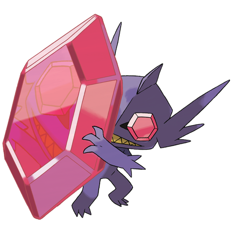
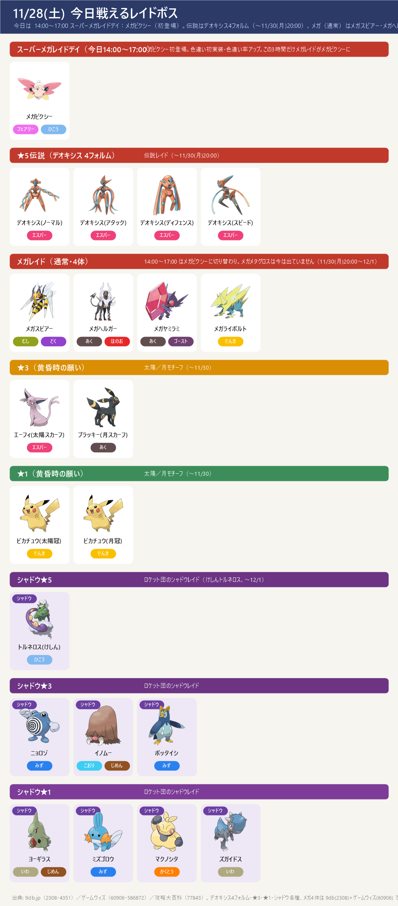
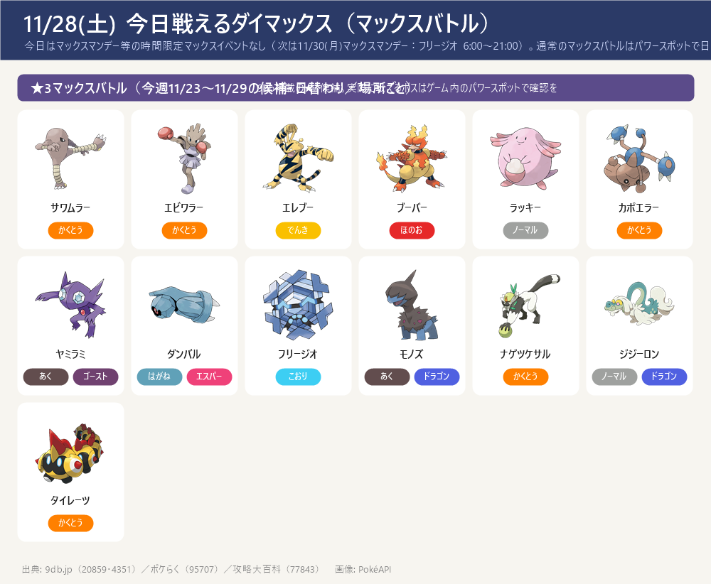
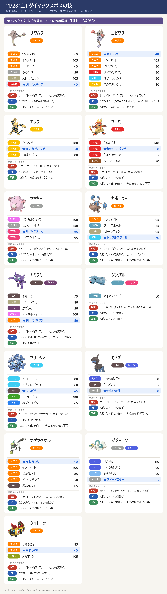

今日のポイント
- 今日 11/28(土) 14:00〜17:00 はスーパーメガレイドデイ：メガピクシーが初登場。色違いのピクシーが初実装され、色違い率アップ。特別なわざ「ムーンフォースプラス」を覚え、無料レイドパス最大6枚・リモートレイドパス上限20回などのボーナスも。14:00〜17:00だけメガレイドがメガピクシー一色になります
- 伝説レイドは
 デオキシス（4フォルム）が継続（〜11/30(月)20:00）。黄昏時の願いの★3
デオキシス（4フォルム）が継続（〜11/30(月)20:00）。黄昏時の願いの★3  エーフィ(太陽スカーフ)・
エーフィ(太陽スカーフ)・ ブラッキー(月スカーフ)、★1
ブラッキー(月スカーフ)、★1  ピカチュウ(太陽冠)・ピカチュウ(月冠)も〜11/30。シャドウレイド（★5 シャドウけしん
ピカチュウ(太陽冠)・ピカチュウ(月冠)も〜11/30。シャドウレイド（★5 シャドウけしん トルネロス〜12/1、★3・★1）も継続
トルネロス〜12/1、★3・★1）も継続 - メガレイド（通常）は今
 メガスピアー・
メガスピアー・ メガヘルガー・
メガヘルガー・
メガヤミラミ・ メガライボルトの4体。メガメタグロスは今は出ていません。黄昏時の願いが終わる11/30(月)20:00〜12/1(火)にメガレイドへ登場しますが、11/30の出現はわずかで実質12/1の1日だけです（公式の補足告知）
メガライボルトの4体。メガメタグロスは今は出ていません。黄昏時の願いが終わる11/30(月)20:00〜12/1(火)にメガレイドへ登場しますが、11/30の出現はわずかで実質12/1の1日だけです（公式の補足告知）
今日戦えるレイドボス
今日は 14:00〜17:00 スーパーメガレイドデイ：メガピクシー（初登場）。伝説はデオキシス4フォルム（〜11/30(月)20:00）、メガ（通常）はメガスピアー・メガヘルガー・メガヤミラミ・メガライボルトの4体。★3・★1は黄昏時の願いの太陽／月モチーフ（〜11/30）。シャドウレイドも継続
- スーパーメガレイドデイ：今日 11/28(土) 14:00〜17:00 の3時間だけメガピクシーが初登場します。色違いのピクシーが初実装され色違い率アップ、特別なわざ「ムーンフォースプラス」を覚えます。フォトディスクから無料レイドパス最大6枚、リモートレイドパスの上限が20回に増えるなどのボーナスもあります
- 伝説はデオキシス4フォルム（〜11/30(月)20:00）。どのフォルムが出るかは場所・ジムで異なります
- メガレイド（通常）はメガスピアー・メガヘルガー・メガヤミラミ・メガライボルトの4体（14:00〜17:00 はメガピクシーに切り替わり）。メガメタグロスは今は出ていません：黄昏時の願いが終わる 11/30(月)20:00 以降にメガレイドへ登場し、終了は変更前と同じなら12/1(火)まで＝11/30の出現はわずかなため実質12/1の1日限定です（公式サポートの補足告知）
- シャドウレイドはロケット団で継続（★5 シャドウけしんトルネロス〜12/1、★3・★1）。終了時刻はゲーム内で確認を

今日戦えるダイマックス（マックスバトル）
今日はマックスマンデー等の時間限定マックスイベントなし（次は11/30(月)マックスマンデー：フリージオ 6:00〜21:00）。通常のマックスバトルはパワースポットで日替わり・場所ごと（下は9db掲載の今週★3候補）
- 今日はマックスマンデーなどの時間限定マックスイベントはありません（次は11/30(月) マックスマンデー：
 フリージオ 6:00〜21:00）
フリージオ 6:00〜21:00） - 通常のマックスバトル（★1〜★3）はパワースポットで日替わり・場所ごとに登場します。戦えるボスはゲーム内のパワースポットで確認してください
- 9db（20859）が挙げる今週（11/23〜11/29）のパワースポット候補：★1はヒトカゲ・ゼニガメ・ピカチュウなどの基本ポケモン多数、★2はニャスパー・ワンリキー・イーブイ・ツボツボ・ニューラ・ホエルコ・ヒンバス・ダルマッカ、★3は下のカード。なおポケらく（95707）は今週を「ダイマックスニャスパー（★1）」中心と表示しており食い違います→ゲーム内で確認を
- 【各ボスのスペシャルアタック候補】（下のカード。数字はレイド・マックスバトルでの威力。★＝ボスが使ってくると楽な、いちばん弱い技（ボスと同じタイプの技は1.2倍で計算。こちらのポケモンとの相性は見ていない）。戦闘中に技名が出たら受け役を合わせる）


サカキ対策（シャドウゼクロム）：攻略ページへ（別ページ）
締め切り・やること：まとめページへ（別ページ）
この先の予定（タップで開閉）
- 11/28(土) 14:00〜17:00 スーパーメガレイドデイ：メガピクシー（初登場・色違い初実装）
- 11/30(月) 6:00〜21:00 マックスマンデー：フリージオ／黄昏時の願い（伝説デオキシス・★3・★1）は 20:00 終了
- 11/30(月) 20:00〜12/1(火) メガメタグロスがメガレイドに登場（黄昏時の願い終了後。11/30の出現はわずかで実質12/1の1日限定）
- 12/1(火) 10:00 新シーズン25『うたた寝の途』（Daydream Destinations）開始／イベント『熱帯楽園』開始（〜12/7(月)20:00）／GOパス（11月）終了・受け取り期限 12/1(火)10:00（12月のGOパスは同10:00開始）
- 12/2(水) 5:00 メガレイド：メガヤドラン／伝説：レジドラゴ（レイドアワー 18:00〜19:00）
- 12/3(木) 18:00〜19:00 スポットライトアワー：コソクムシ
サイトで違っていた点（タップで開閉）
- メガレイド（通常）メガスピアー・メガヘルガー・メガヤミラミ・メガライボルトは 9db(2308)×ゲームウィズ(60906) で一致。メガメタグロスは当初11/25〜の予定だったが変更され、黄昏時の願い終了後の『11/30(月)20:00〜』登場に（公式サポートの補足告知。ガジェット通信・ポケらく・9db(2308) も同旨）。終了は変更前と同じなら12/1(火)まで＝11/30の出現はわずかなため実質12/1の1日限定。以前のノートの『11/25〜12/1にメタグロスが4メガと並行して出る』は誤りだったため今日のノートで訂正
- 新シーズンは『シーズン25 うたた寝の途（Daydream Destinations）』で、開始は 12/1(火)10:00（9db 4351）。以前のノートで12/2(水)としていたのを訂正（公式 pokemongo.com・Serebii・Dexerto・GoDex とも12/1で一致）。GOパス（12月分）も同じ 12/1 10:00 開始で、11月分GOパスの受け取り期限は 12/1 10:00
- 伝説デオキシス4フォルム・★3エーフィ(太陽スカーフ)/ブラッキー(月スカーフ)・★1ピカチュウ(太陽冠/月冠)・シャドウ各種は 9db(2308)×ゲームウィズ(60906) で一致。黄昏時の願いは〜11/30(月)20:00、シャドウけしんトルネロスは〜12/1
- スーパーメガレイドデイ メガピクシー（11/28 14:00〜17:00・初登場・色違い初実装）は 9db(4351・26152)×ゲームウィズ(586872) で一致
- マックスバトルの固定ボス：ポケらく（95707）は今週（11/23〜11/29）を『ダイマックスニャスパー（★1）』、9db（20859）は同週の★1〜★3の日替わり候補を表示。食い違うため9db掲載の今週★3候補を参考に載せ、ゲーム内確認を促す
- 今日（11/28 土）はスポットライトアワーなどの時間限定イベントの記載なし（スポットライトアワーは木曜のみ。次は12/3(木) コソクムシ）
- ダイマックスボスの技候補はゲームデータ(PvPoke)から（おんがえし・やつあたりは除外）、威力は pogoapi.net
出典: 9db.jp/pokemongo（開催イベント一覧4351・レイド日程2308・マックスバトル日程20859・メガピクシー26152）／pokemongo.gamewith.jp（出現中レイド60906・メガピクシー586872）／pokemongo-raku.com（95707）／pokemon.gamepedia.jp/go（攻略大百科77843）／pvpoke.com ゲームデータ（技候補）／pogoapi.net（威力）
画像: PokéAPI ／ 2サイト以上で一致した情報だけを載せています